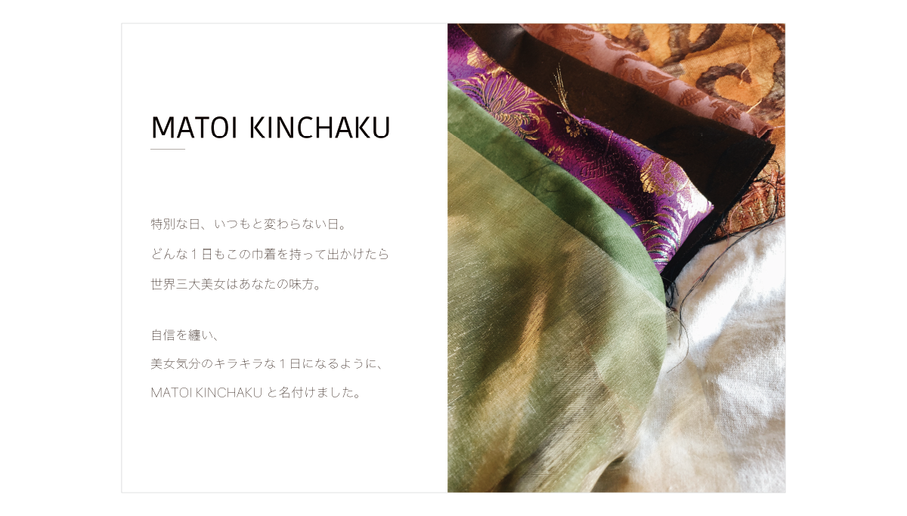

世界三大美女
情報環境デザイン学科 ２年
植地梨絵（ピッキン）
三大美女の力を借りたいような日にこのバッグを持つことで、美女を味方につけて素敵な1日になるようにという想いを込め、巾着バッグを制作しました。バッグという形で美女を身に纏うことで、自信を纏えるようにという意味合いでMATOI KINCHAKUと名付けています。世界三大美女である楊貴妃、小野小町、クレオパトラがそれぞれ当時着ていたとされる服装をもとにデザインを考え、美女の華やかな装飾を布で表現できるよう、生地を重ねたり切り替えたりしてみました。
Goods design | 巾着 パンフレット
